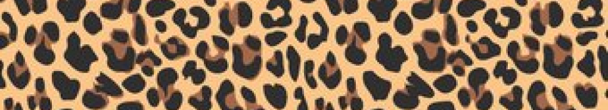

Trends come and go (and come and go), but there are some things that never go out of style. They may be more popular one season than another but, on the whole, they are forever pieces that form the cornerstones of our wardrobes.

And this season, amid all the ideas that will have their five minutes of fame, we saw the return of the leopard-print coat. It’s a piece your mother and grandmother probably wore before you, and yet it still feels relevant. If you buy one now, I bet you’ll be wearing it for years to come (and maybe your child will nick it from you, too).
